项目
AI 产品、知识系统与科学数据项目
Kaleido
kaleido.asia
多智能体生态/社会-环境推演系统 · 独立开源项目 | 产品定义 / AI 原型开发 | 2026.03 - 至今
Kaleido 是我独立定义和开发的多智能体生态/社会-环境推演系统，目标是把真实资料、真实地点、关系图谱、风险对象和变量注入组织成可运行的社会-生态复杂关系演化探索器。
- 产品定义：“社会-生态复杂关系演化探索器”。把“关系 / edge”设为一等原语，状态作为关系演化的副产品，支持用户从真实资料或真实地点进入可干预、可回放、可追问的生态-社会推演场。
- Multi-Agent 节点体系设计：将真实报告、政策、访谈和研究笔记中的生态受体、人类主体、组织/企业、政府/监管、基础设施、环境载体等节点抽取为不同类型的 Agent。
- 推演闭环搭建：资料导入与图谱构建、场景配置、Agent 与区域状态初始化、多轮模拟、变量注入、风险运行时刷新、反馈环检测、报告生成和节点/关系追问。
- 场景配置层设计：把区域/子区域、Agent 关系、hazard 模板、传播通道、时间计划、注入变量、风险对象、机制图汇入同一运行配置。
- 风险模型设计：建立 14 个具体生态灾害扩散模板与 5 类风险模型，包括水位与生态服务耦合、建成区内涝与排水压力、居民与游客暴露、交通与关键设施可达性、预警响应与公共服务承压。
- 关系演化与机制推演：动态关系边不只是图谱装饰，而会把源区域压力耦合到目标区域状态。支持跨区新关系发现、dormant 历史、关系重激活、强关系晋升为结构边、反馈环检测，以及治理通道导致的 balancing loop。
Vue 3FlaskPythonLLMZep GraphLeafletThree.js
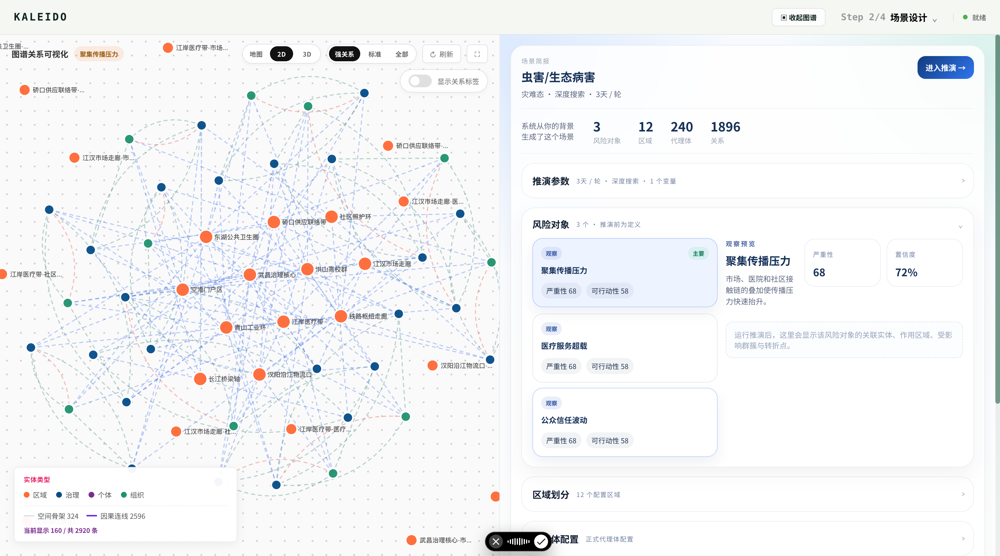
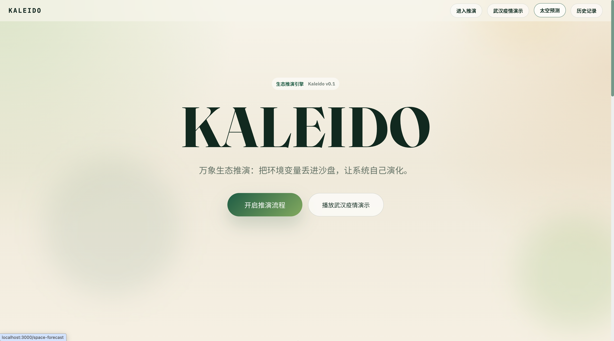


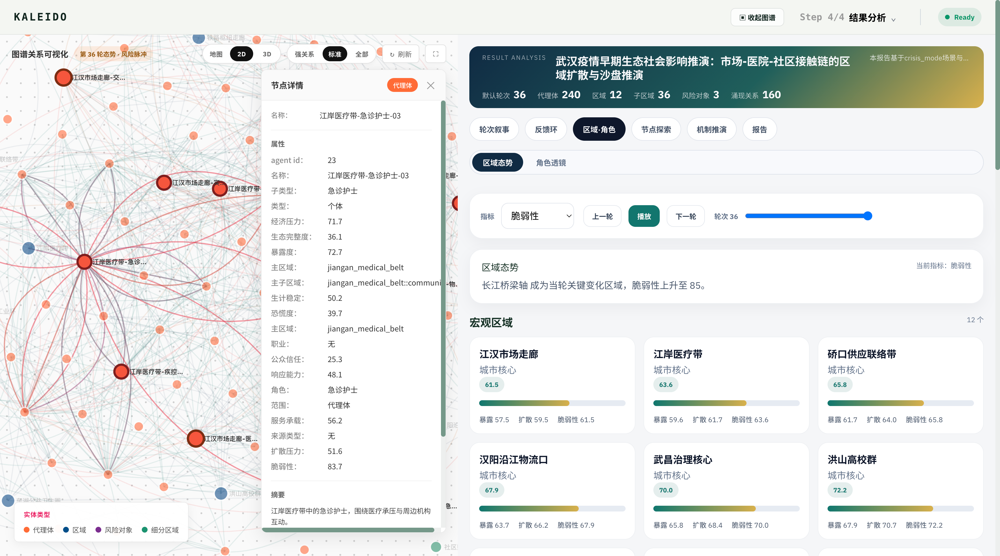
Synapse
synapse.pw
UP 主风格库提炼与科学内容生产系统 · 独立项目 | 产品设计 / AI 工作流 / 知识系统 | 2026.02 - 至今
围绕 BlueDot 科学内容生产和外部 UP 主研究，搭建从环境新闻自动整理推送、UP 主蒸馏、AI 辅助写稿 Harness，到全频道长期记忆引擎的自媒体创作辅助系统。
- UP 主蒸馏模块：从一个 UP 主的上百条公开视频中抓取资料、转写文稿，并提炼其长期稳定的表达方式，而不是只做单篇视频总结。
- 风格库提炼：将视频风格拆解为可复用的创作资产，包括开场方式、叙事结构、解释策略、转场习惯、标题手法、结尾方式和语言指纹，帮助 AI 学习“这个 UP 主到底怎么讲故事”。
- 风格包出口：保留具体表达样本，形成可供 Claude / GPT 使用的风格包；当前已形成 135 张视频风格卡，10 个 UP，0 fallback，平均证据槽覆盖 98.3%。
- AI 写稿 Harness：将新闻/热点到视频成稿拆解为“选题报告 -> 脚本蓝图 -> 成稿 -> 审稿优化 -> 分镜素材单”的多阶段生产链路。
- 频道记忆引擎：完成 Feishu 46 个文档入库与长期记忆沉淀，支持 approved-only semantic recall，使已确认的频道经验、选题偏好和写作规范进入 AI 创作上下文。
Next.jsPostgreSQLPrismaASRStyle PackSemantic Memory
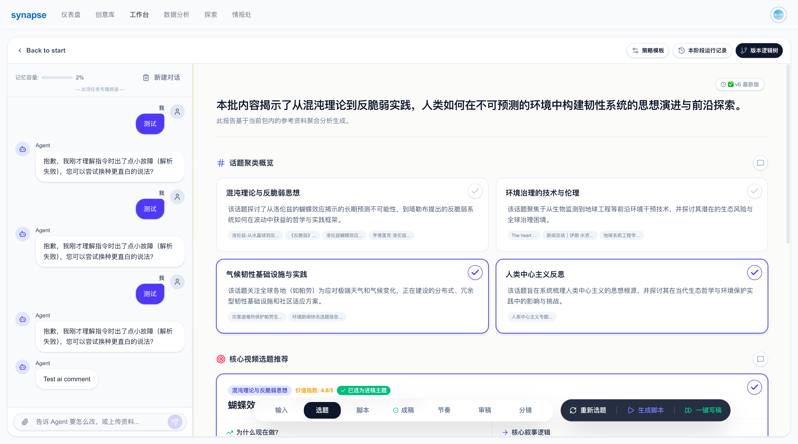
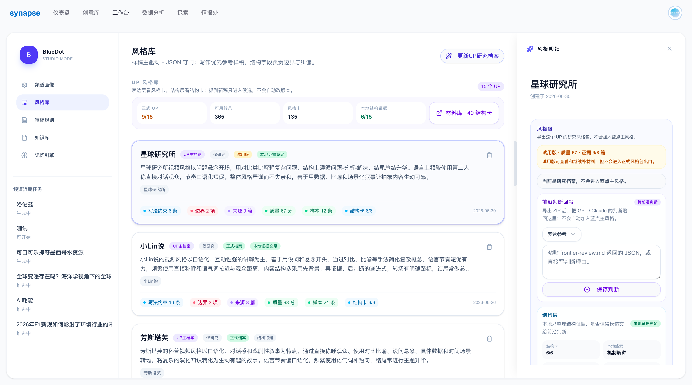
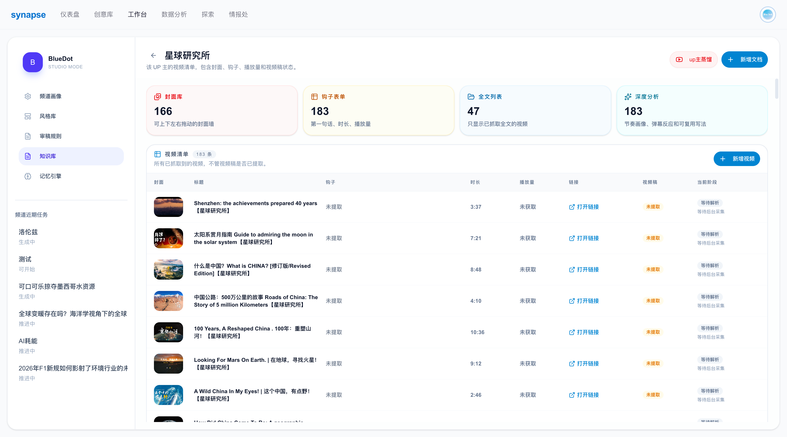

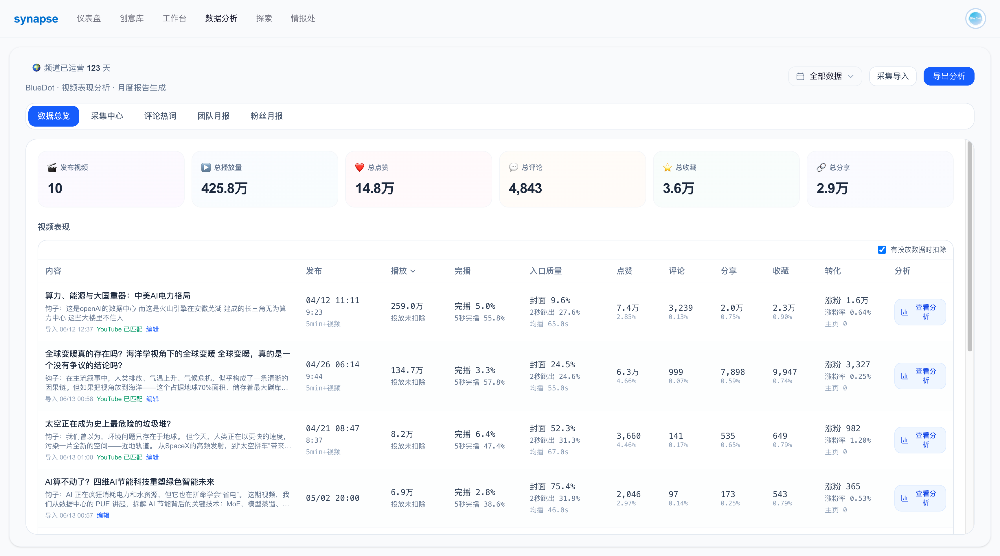
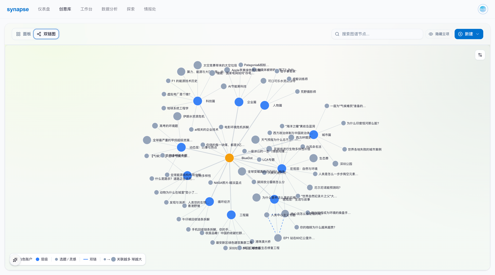
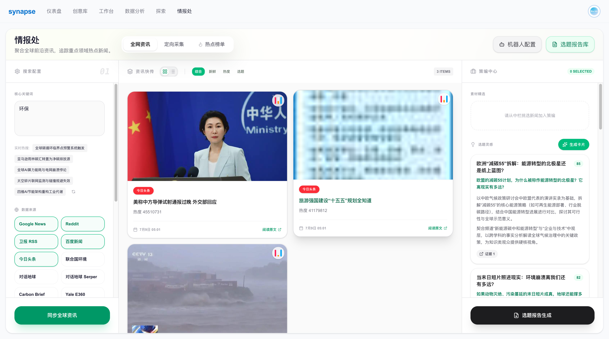
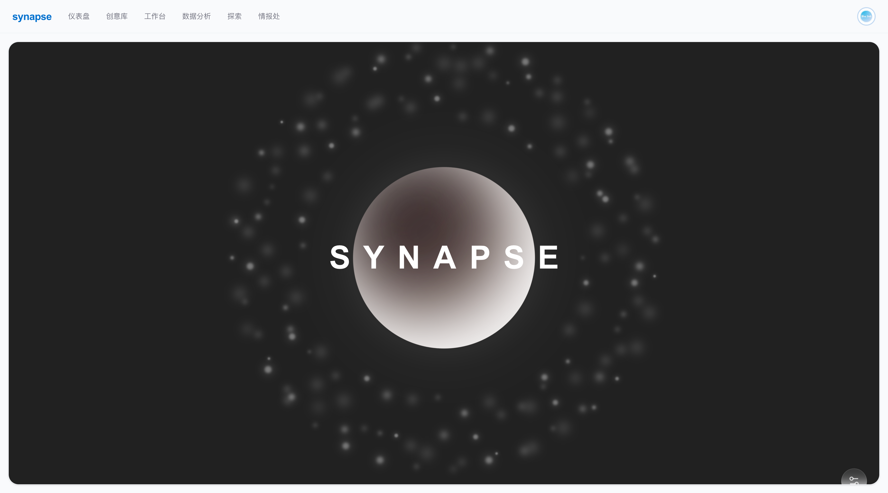
汉环·融智 环境咨询行业项目管理系统
hzrcdf.cn
覆盖项目、合同、OA、财务、资料库与移动端的环境咨询行业协作平台
在蓉创鼎锋工作期间，参与并推进公司内部项目管理系统建设。系统服务真实业务流程，覆盖商务项目、技术项目、合同与合同财务、OA 审批、报销中心、组织权限、资料库、项目沟通、移动端入口等，不是环保展示页或单一生态项目。
- 项目管理：商务项目与技术项目拆分管理，支持任务、日报/周报、成员、文件、归档和项目转合同链路
- 合同与财务：合同台账、项目关联、合同成员、合同附件、付款、开票、成本、报销归集和财务中心
- OA 流程：出差、报销、请假、评审费、借款、项目归档等审批流，含评论、附件、打印导出与财务联动
- 组织与移动端：多组织/租户边界、角色权限、资料库权限、移动端项目中心和工作提醒
Next.jsReactPrismaPostgreSQLOSSMobile WebPermission System
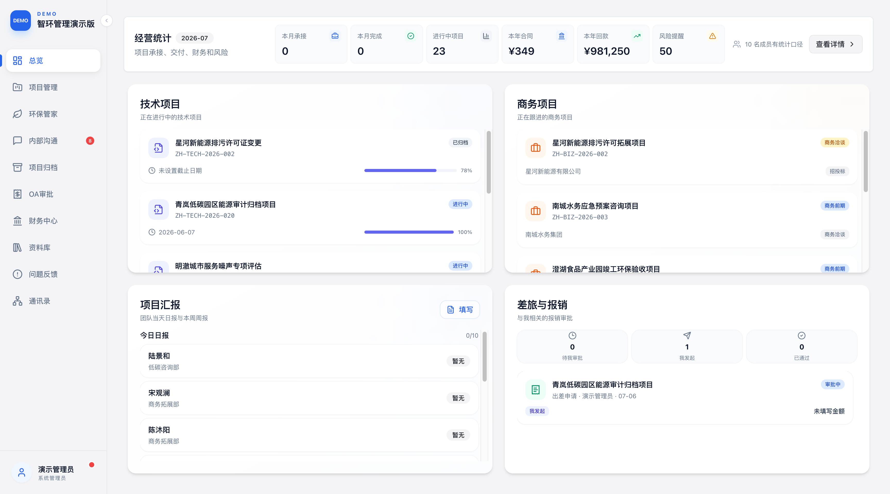
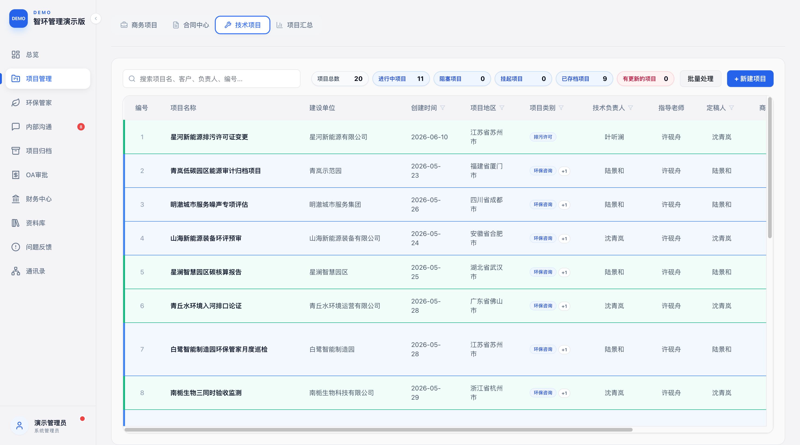
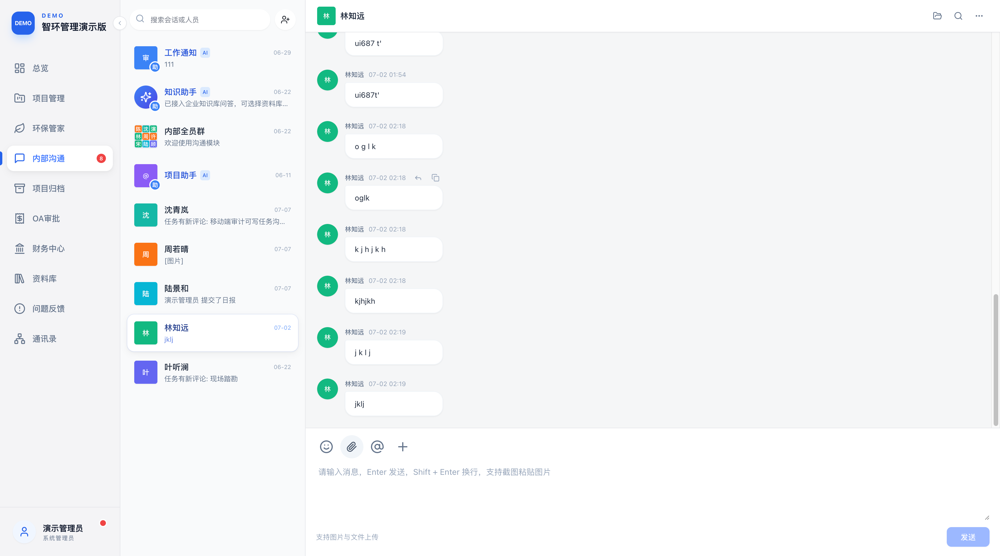
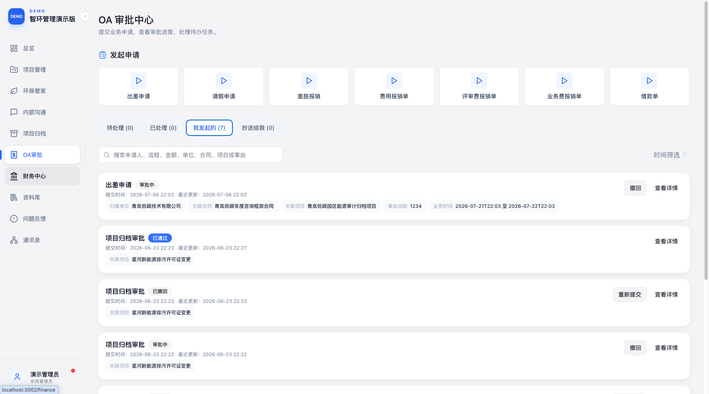
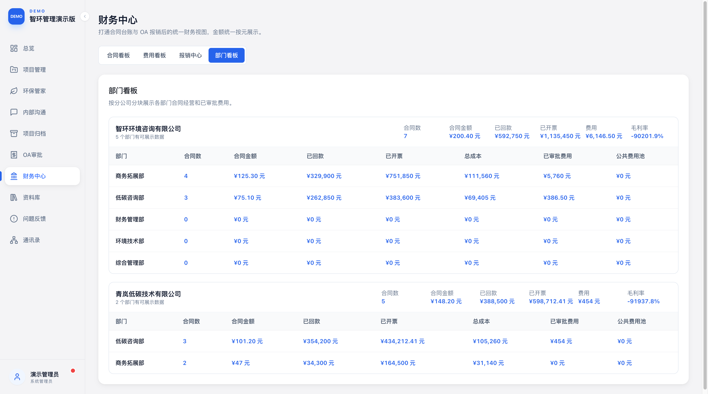
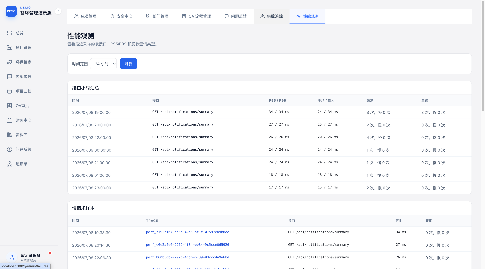
BlueDot Lab 蓝点实验室
科学内容交互网站与数据可视化工具 · 独立开发 / 产品设计 / AI 辅助数据可视化 | 2026.02 - 至今
面向公众展示自媒体创作过程中积累的研究数据，并进行数据可视化与趣味交互设计，包括太空轨道碰撞预测、厄尔尼诺预测历史图谱、灾害年轮、高考环境题等数据工作台。
- 太空预测系统：构建三维地球、轨道壳层、碰撞模板、碎片压力、避碰效率、自然衰减、后续级联碰撞和凯斯勒阈值模型；支持选择起始年份、碰撞等级和目标轨道高度，实时输出可用卫星、碎片总量、预测碰撞率和曲线。
- 厄尔尼诺预测历史图谱：整理 1950-2026 年 NOAA ONI 数据为 924 个三个月滑动季，制作交互面积图，对比学界主流预测、实际 ONI 与非科学对照序列。
- 高考环境题数据台：迁移并整理 2016-2025 年高考环境题资料包，累计处理 739 份试卷、14903 道题，当前主口径以 6811 道题为分母，确认 544 道环境题。
- 灾害年轮：接入地震、旱涝、台风、火山、海啸、野火、人道响应等多源数据，形成 930 条年度灾害指数、21 类来源、787 个年度事件分包、1075 条强热带气旋路径和 58743 条中国旱涝空间点。
Next.jsReactD3Three.js数据可视化AI 辅助开发
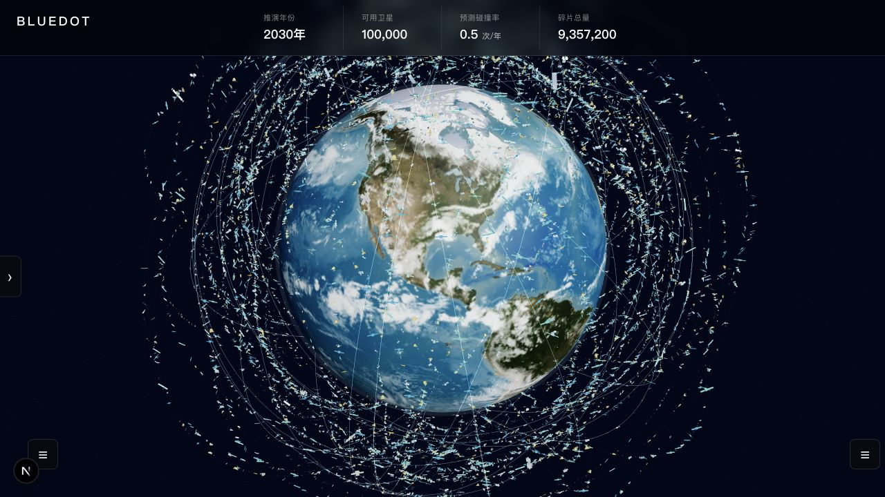
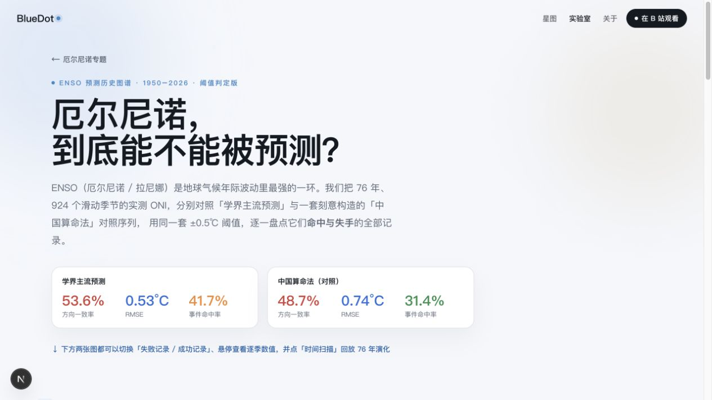
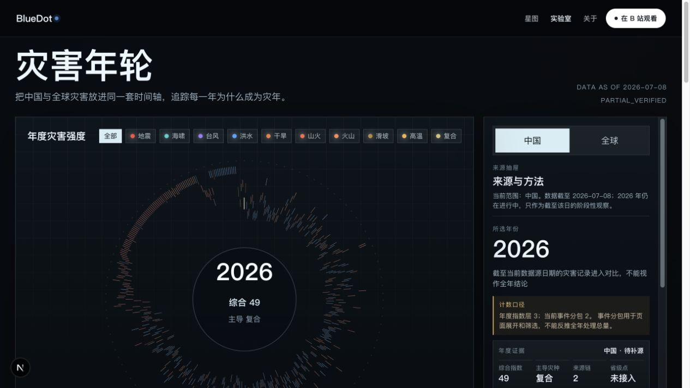